7 Rapporten
- Waarvoor je rapporten kunt gebruiken.
- Hoe je etiketten met de Wizard kunt maken.
- Het maken van een automatisch gegenereerd rapport met handmatige aanpassingen.
- Het maken van een gegroepeerd rapport.
- Het maken van een rapport met afbeeldingen van bonbons op etiketten.
Rapporten zijn overzichten die meestal bedoeld zijn om af te drukken. Ook etiketten zijn een vorm van rapporten.
7.1 Over rapporten maken
Rapporten zijn meestal overzichten en samenvattingen van grote hoeveelheden informatie.
Als je een verkoopoverzicht op een overzichtelijke manier op papier willen afdrukken dan gebruik je een rapport. In een rapport kun je ook subtotalen en eindtotalen berekenen en afdrukken. Rapporten kun je vanaf nul met de hand maken, maar het is gemakkelijker om de Wizard te gebruiken.
Een rapport kan ook dynamisch worden door gebruik te maken van parameters. Bij het genereren van het rapport wordt dan eerst om aanvullende informatie gevraagd. Als voorbeeld hiervan zie het rapport Verkoop per doos. Wanneer je dit rapport opent dan word je achtereenvolgens eerst gevraagd om de begin- en einddatum in te voeren.
7.2 Taak: Etiketten maken
In deze taak worden adresetiketten van de klanten gemaakt met de Wizard etiketten. Eerst moet de tabel geselecteerd worden waarin de velden voorkomen die op het etiket moeten verschijnen. Daarna kan de Wizard etiketten gestart worden.
Open zonodig database snoep365.accdb.
Selecteer de tabel Klanten.
Kies tab Maken > Etiketten (groep rapporten).
Selecteer maateenheid
Engels, fabrikantAveryen dan productAvery L7160, zie figuur 7.1.
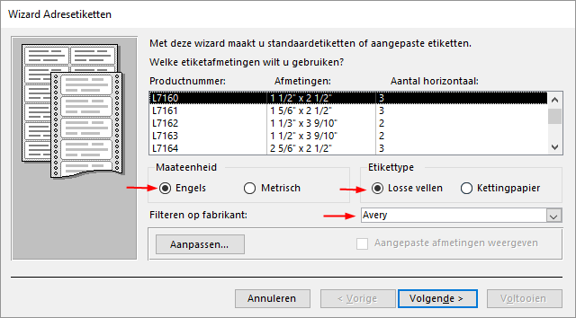
Figuur 7.1: Keuze etikettype Avery L7160.
Klik op Volgende. In het scherm dat nu getoond wordt kun je het lettertype en de kleur voor de tekst wijzigen.
Accepteer de standaardinstellingen en klik op Volgende.
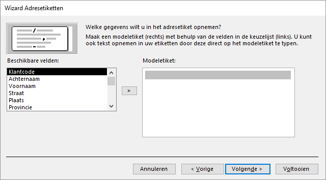
Figuur 7.2: Gegevens op het etiket.
Door dubbel te klikken op een veldnaam wordt deze op de plaats van de cursor ingevoegd. De veldnaam verschijnt dan tussen accolades op het modeletiket. Ook tekst en spaties kunnen worden ingetypt. Door op de Enter toets te drukken wordt een nieuwe regel gemaakt.
-
Maak het volgende Modeletiket (met tussen de voor- en achternaam 1 spatie en tussen postcode en plaats 2 spaties):
{Voornaam} {Achternaam} {Straat} {Postcode} {Plaats} Klik op Volgende. In het scherm dat nu getoond wordt kun je aangeven of de etiketten gesorteerd moeten worden en zo ja, op welke velden.
Er moet op Postcode gesorteerd worden. Voeg dit veld toe en klik op Volgende. Het laatste scherm van de Wizard wordt nu getoond. Hier kun je de naam voor het rapport specificeren.
Geef het rapport de naam Adresetiketten klanten en klik op Voltooien.
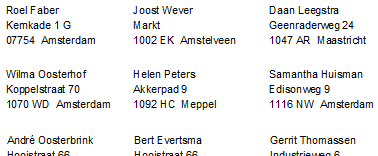
Figuur 7.3: Afdrukvoorbeeld.
- Sluit het rapport.
7.3 Taak: Automatisch rapport
Access kan automatisch een rapport genereren op basis van een tabel of een query. Soms is het gegenereerde rapport voldoende, maar vaak zullen toch wat handmatige aanpassingen gedaan moeten worden.
Open zonodig database snoep365.accdb.
Selecteer de query Verkoop per regio per doos.
Klik tab Maken > Rapport (groep Rapporten). Het rapport wordt aangemaakt en geopend in de Indelingsweergave.
Niet fraai is dat de waarde van Regio voor elk record herhaald wordt en dat de geldbedragen niet juist opgemaakt zijn. In de volgende stappen worden hiervoor wijzigingen aangebracht.
Sluit het rapport en beantwoord de vraag of de wijzigingen bewaard moeten worden met Ja. Het venster Opslaan als verschijnt.
Typ als naam in Verkoop per regio per doos en klik op OK.
Open het rapport Verkoop per regio per doos in de Ontwerpweergave.
Selecteer in de sectie Details het vak Regio. Wijzig in het Eigenschappenvenster de waarde van eigenschap Duplicaten verbergen in
Ja.
Het Eigenschappenvenster staat aan de rechterkant van het scherm en kan zichtbaar en onzichtbaar gemaakt worden via sneltoets F4.
Selecteer in de sectie Details het veld omzet. Wijzig in het Eigenschappenvenster de waarde van eigenschap Notatie in
Valuta.Schakel naar de Rapportweergave. De waarde van het veld Regio wordt nu maar één keer getoond en de omzet is als geldbedragen opgemaakt.
Sluit het rapport en bewaar de wijzigingen.
7.4 Taak: Groepsrapport
- INFORMATIEBEHOEFTE
- Maak een rapport waarop over een op te geven periode de verkoop per doos te zien is, alsmede de detailgegevens van elke order. Zie als voorbeeld figuur 7.4 waarin een gedeelte van het rapport te zien is over november 2009.
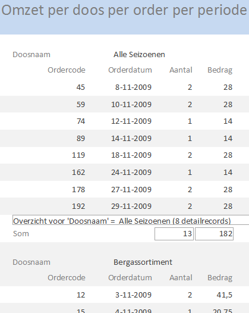
Figuur 7.4: Rapport November 2009 (gedeeltelijke weergave).
- ANALYSE
- De benodigde gegevens zijn Doosnaam, Ordercode, Orderdatum, Aantal en een veld Bedrag wat berekend wordt met de expressie
[Hoeveelheid]*[Doosprijs]. Een query gemaakt voor deze gegevens is reeds beschikbaar onder de naam Omzet per doos per order per periode.
Open zonodig database snoep365.accdb.
Selecteer query Omzet per doos per order per periode.
Kies tab Maken > Wizard rapport (groep Rapporten).
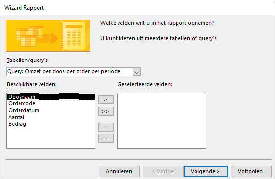
Figuur 7.5: Selecteer de op te nemen velden.
Voeg alle velden van de query toe. Klik Volgende. In het scherm dat nu getoond wordt kun je aangeven of je groepeerniveaus wilt toevoegen.
Verwijder eventuele reeds aanwezige groepeerniveaus (Ordercode) en voeg Doosnaam als groepeerniveau toe.
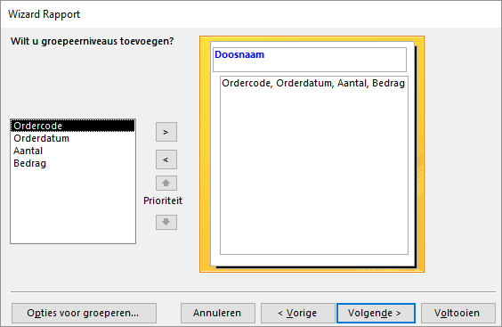
Figuur 7.6: Selecteer de velden waarop gegroepeerd moet worden.
Klik Volgende. In het scherm dat nu getoond wordt kun je de sorteervolgorde aangeven.
Geef aan dat oplopend op Ordercode gesorteerd moet worden.
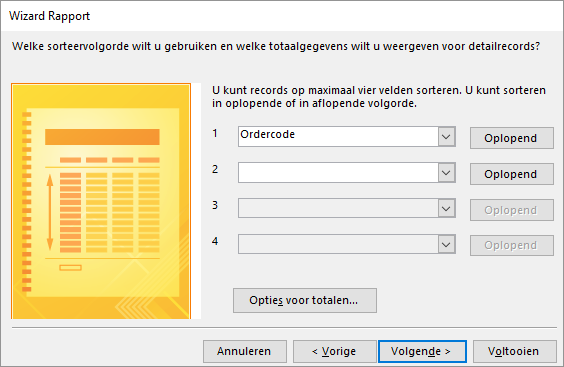
Figuur 7.7: Sorteervelden en opties voor totalen specificeren.
- Klik op de knop Opties voor totalen… en geef aan dat voor de velden Aantal en Bedrag ook de
Sommoet worden afgedrukt.
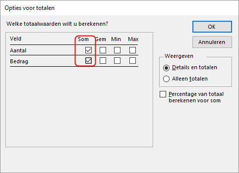
Figuur 7.8: Totaalwaarden specificeren.
Klik op OK en daarna op Volgende. Nu kun je aangeven hoe je het rapport opgemaakt wilt hebben.
Selecteer indeling Overzicht.
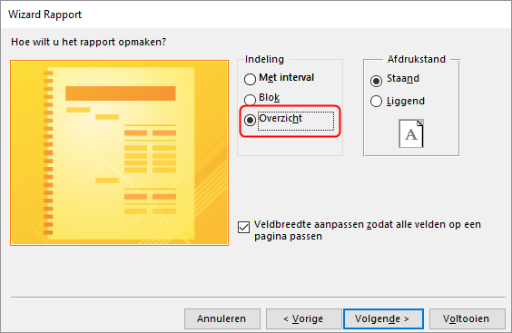
Figuur 7.9: Opmaak van het rapport aangeven.
Klik op Volgende. Het laatste scherm van de Wizard wordt nu getoond. Hier kun je de naam voor het rapport specificeren.
Geef het rapport de naam Omzet per doos per order per periode en klik op Voltooien.
Het rapport wordt gemaakt en in weergave Afdrukvoorbeeld geopend. Omdat de query de parameters begindatum en einddatum kent vraagt Access om een waarde hiervoor.
Test met begindatum
1-11-2009en einddatum30-11-2009.Sluit het rapport.
7.5 Taak: Bonbon afbeeldingen
In deze opdracht wordt een rapport gemaakt met de afbeeldingen van de bonbons en de bijbehorende bonbonnaam en bonboncode. Daarvoor worden etiketten gebruikt met op elk etiket de gegevens van de bonbon.
Open zonodig database snoep365.accdb.
Selecteer de tabel Bonbons.
Kies tab Maken > Etiketten (groep Rapporten).
Selecteer maateenheid
Metrisch, fabrikantZweckformen dan productZweckform 3415.
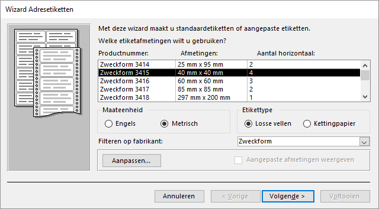
Figuur 7.10: Keuze etikettype Zweckform 3415.
Klik op Volgende. In het scherm dat nu getoond wordt kun je het lettertype en de kleur voor de tekst wijzigen.
Accepteer de standaardinstellingen en klik op Volgende.
-
Maak het volgende Modeletiket, met tussen de velden 1 spatie):
{Bonboncode} {Bonbonnaam} Klik op Volgende. Specificeer oplopend sorteren op Bonboncode.
Klik op Volgende. Noem het rapport Overzicht bonbons.
Klik op Voltooien. Het rapport wordt gegenereerd en verschijnt in de weergave Afdrukvoorbeeld.
Schakel over naar de Ontwerpweergave.
Klik op tab Ontwerp > Kader voor afhankelijk object (groep Besturingselementen)
 en teken hiermee op het etiket een kader van ca. 2,5 cm bij 2,5cm.
en teken hiermee op het etiket een kader van ca. 2,5 cm bij 2,5cm.
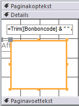
Figuur 7.11: Kader voor het object.
-
Zorg dat het kader geselecteerd blijft en breng dan via het Eigenschappenvenster de volgende wijzigingen aan:
- In tab Opmaak: zet Breedte en Hoogte op
2,5 cm. Het is mogelijk dat Access de afmetingen iets aanpast.
- In tab Opmaak: zet Breedte en Hoogte op
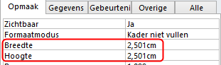
Figuur 7.12: Afmetingen van het objectkader instellen.
+ In tab [Gegevens]{.uicontrol}: stel eigenschap [Besturingselementbron]{.uicontrol} in op `Plaatje`.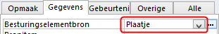
Figuur 7.13: Besturingsbron voor het object instellen.
- Selecteer op het etiket het bijschrift dat zich grotendeels achter het kader bevindt.
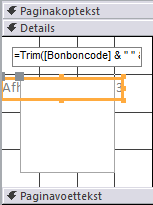
Figuur 7.14: Bijschrift selecteren.
Verwijder het bijschrift met de Delete toets.
Schakel over naar Afdrukvoorbeeld.
Het is nu bijna goed. Alleen de afbeeldingen beginnen niet allemaal op dezelfde hoogte waardoor het beeld er wat schots en scheef uitziet. Voor de tekst van de Bonboncode en Bonbonnaam moet nu nog een vaste hoogte ingesteld worden zodat alle plaatjes op dezelfde hoogte geplaatst worden.
- Schakel over naar de Ontwerpweergave, selecteer het tekstvak en zet de eigenschap Hoogte op
1cm. Stel ook de eigenschappen Te vergroten en Te verkleinen in opNee.
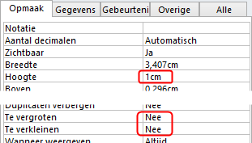
Figuur 7.15: Eigenschappen van het tekstvak.
- Lijn het plaatje en het tekstvak links uit.
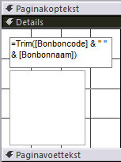
Figuur 7.16: Uitlijning van de objecten.
- Schakel over naar Afdrukvoorbeeld.
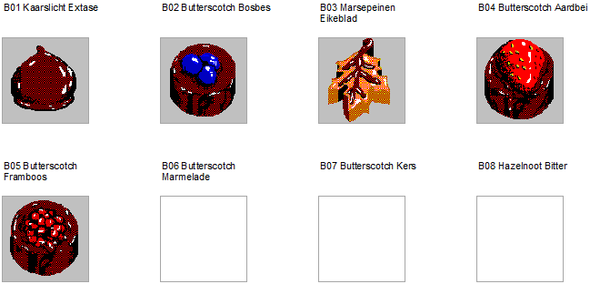
Figuur 7.17: Afdrukvoorbeeld bonbonsoorten.
- Sluit het rapport en bewaar de wijzigingen.
7.6 Opgaven
rapp001 - Verkoop per regio per doos
Maak onderstaand rapport met per regio de verkoop per doos. Hierbij moet ook berekend en getoond worden de totale omzet per regio en het percentage van de omzet over alle regio’s. Bewaar het rapport onder de naam rapp001.
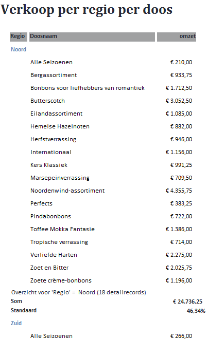
rapp002 - Omzet per doos per regio
Maak een rapport met daarop per doos de omzet per regio. Bewaar het rapport onder de naam rapp002.
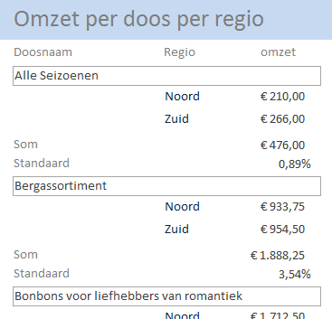
rapp003 - Dooskosten met Bonbonkosten
Maak een rapport dat de bonbons in elke doos geeft samen met de kosten van elke bonbon. Toon ook de totale kosten van de bonbons per doos. Bewaar dit rapport op onder de naam rapp003.
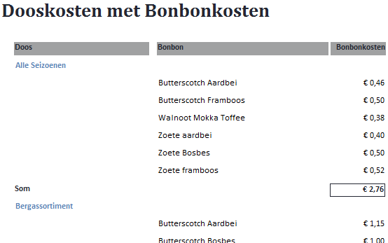
rapp004 - Dooskosten met Bonbonkosten gegroepeerd
Maak een kopie van rapport rapp003 en noem de kopie rapp004. Maak het rapport beter leesbaar door alle gegevens die bij een doos horen op één pagina af te drukken. Je kunt dit doen door een pagina-einde in te voegen voor de koptekst van elke groep (hier Doos). Daarvoor moet je de eigenschap Nieuwe pagina voor de Koptekst (Doos) instellen op de waarde Voor sectie.
Maak verder nog wat kleine wijzigingen in de opmaak. Het tekstvak Som moet naar rechts verplaatst worden met een kleine horizontale lijn boven de tekst en het bedrag.
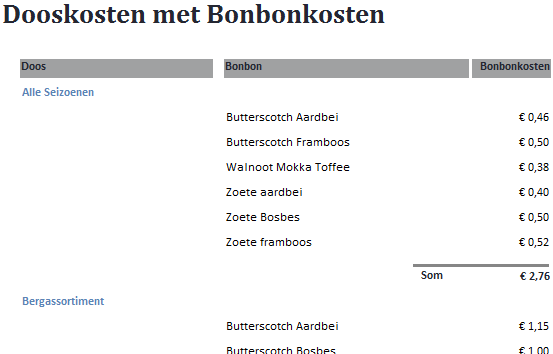
rapp005 - Omzet per doos per order per periode
Maak een kopie van het rapport Omzet per doos per order per periode en noem de kopie rapp005. Wijzig het ontwerp zodanig dat het totale bedrag per doos naast de doosnaam wordt afgedrukt.
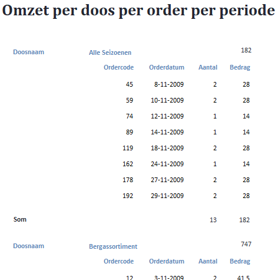
rapp006 - Doos per pagina
Maak een kopie van rapport rapp005 en noem het rapport rapp006. Verander het ontwerp van het rapport zodanig dat iedere doos op een nieuwe pagina begint.
Zet de eigenschap Nieuwe pagina voor de Koptekst (Doosnaam) op de waarde Voor sectie.
rapp007 - Doosetiketten
Maak etiketten voor alle bonbondozen volgens het model zoals hierna afgebeeld. Bewaar het rapport onder de naam rapp007.
Etikettype “Avery J8163 99mmx38mm”, Letter Consolas 12pt normaal, zwart.
Alle Seizoenen
Code : ALLS
Gewicht: 150 gramrapp008 - Jaarafzet dozen per regio
Maak een rapport met daarop per regio het aantal verkochte dozen in een bepaald jaar. Bij het openen van het rapport moet eerst gevraagd worden naar het jaar van verkoop waarop het rapport gebaseerd moet zijn. Bewaar het rapport onder de naam rapp008.
In de afbeelding hierna zie je het begin van de uitvoer voor het jaar 2009.
Maak eerst een parameterquery Jaarafzet dozen per regio die de benodigde gegevens voor het rapport levert en naar het verkoopjaar vraagt.
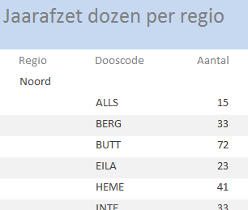